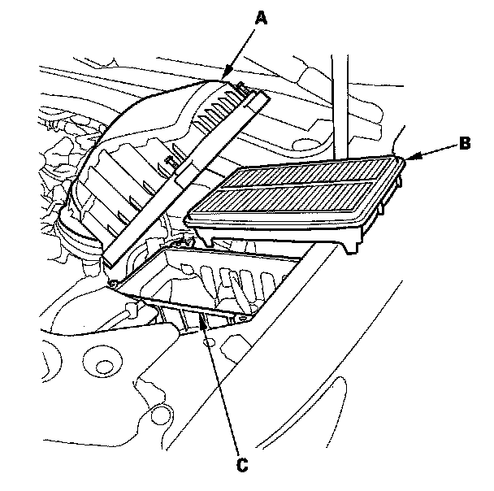
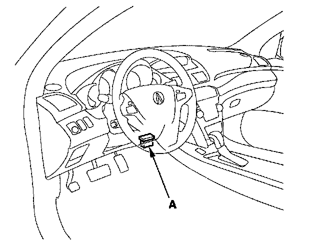

Air Filter Element: Testing and Inspection
Air Cleaner Element Inspection/Replacement
1. Open the air cleaner housing cover (A).
2. Remove the air cleaner element (B) from the air cleaner housing (C).
3. Check the air cleaner element for damage or clogging. If there is damage or clogging, replace the air cleaner element.
NOTE: Do not use compressed air to clean the air cleaner element.
4. Clean and remove any debris from inside the air cleaner housing.
5. Install the parts in the reverse order of removal.
6. If the maintenance minder required to the air cleaner element, reset the maintenance minder and this procedure is complete. If the maintenance minder did not require to replace the air cleaner element, go to step 8.

7. Connect the HDS to the data link connector (DLC) (A) located under the driver's side of the dashboard.
8. Turn the ignition switch ON (II).
9. Make sure the HDS communicates with the PCM and other vehicle systems. If it does not, go to the DLC circuit troubleshooting.
10. Select BODY ELECTRICAL with the HDS.
11. Select ADJUSTMENT in the GAUGES MENU with the HDS.
12. Select RESET in the MAINTENANCE MINDER with the HDS.
13. Select MAINTENANCE SUB ITEM 2 RESET with the HDS.